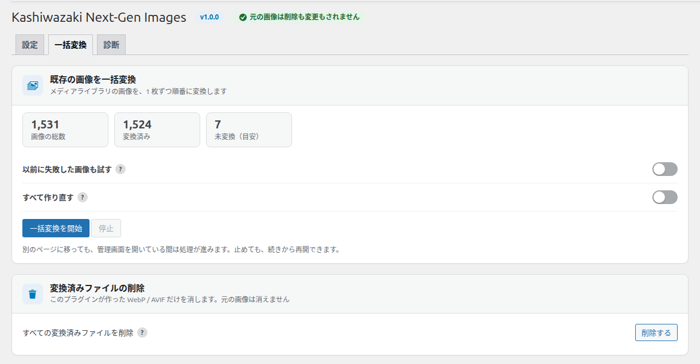
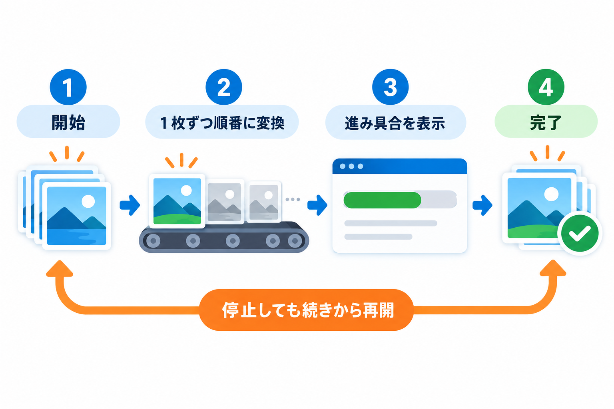
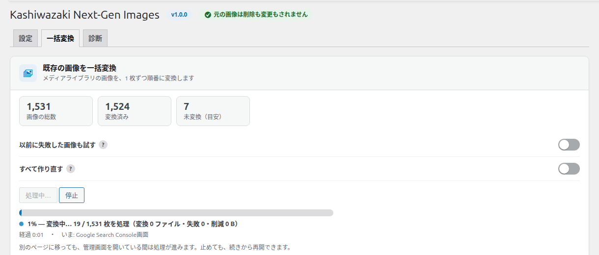
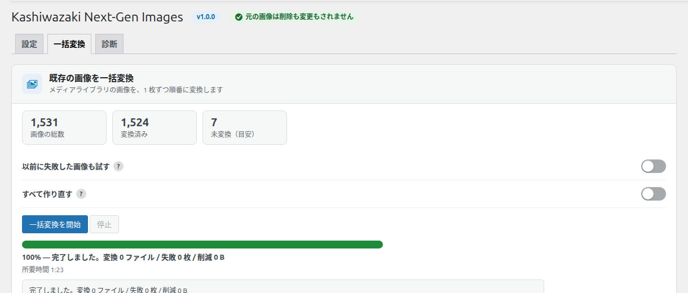

一括変換タブ
すでにメディアライブラリにある画像を、まとめて WebP・AVIF に変換する画面です。このプラグインが作った変換ファイルをまとめて削除することもできます。

既存の画像を一括変換
メディアライブラリの画像を、1 枚ずつ順番に変換します。

数字の見方
| 表示 | 意味 |
|---|---|
| 画像の総数 | メディアライブラリの JPEG・PNG・GIF・WebP の画像の数 |
| 変換済み | WebP か AVIF が 1 つ以上ある画像の数 |
| 未変換（目安） | 総数から変換済みを引いた数。軽くならない画像やアニメーション画像など、変換しない画像も含むため、0 にならないことがあります |
開始前に選べること
以前に失敗した画像も試す
前回うまく変換できなかった画像を、もう一度試します。
| 初期値 | オフ |
| 対象になる失敗 | メモリ不足・エンジンのエラー・出力の検証に失敗・書き込み失敗・読み込み失敗 |
| 対象にならないもの | 「軽くならないため」「画素数が上限超過」など、理由があって変換しなかった画像。これらを作り直すには「すべて作り直す」を使います |
すべて作り直す
変換済みの画像も含めて、すべて作り直します。画質などの設定を変えたあとに使います。
| 初期値 | オフ |
| オンのとき | すべての画像を対象にし、以前に失敗した画像も試します |
| オフのとき | まだ変換していない画像、元の画像が差し替わった画像、変換ファイルが消えた画像だけを変換します |
| 注意 | 他のプラグインが作った WebP・AVIF は上書きしません |
この 2 つのスイッチは保存されません。開始したときの状態だけが使われます。
操作手順
「一括変換を開始」を押す
ボタンが「処理中…」に変わり、進み具合が表示されます。
進み具合を見る
進捗バーと「◯% — 変換中… 処理した枚数 / 全体の枚数（変換したファイル数・失敗の数・減った容量）」が表示されます。下の行には経過時間、残りの目安、いま処理している画像の名前が出ます。

完了を確かめる
終わると進捗バーが 100% になり、「完了しました。変換 ◯ ファイル / 失敗 ◯ 枚 / 削減 ◯」と、かかった時間が表示されます。

別のページに移っても、管理画面を開いている間は処理が進みます。管理画面を閉じても、WordPress の予約処理で少しずつ進みます。実行中は、ほかの管理画面の上部にも進み具合が表示され、「詳しく見る」でこの画面に戻れます。
進み具合の下には、処理の記録（ログ）が新しい順に最大 30 行表示されます。失敗は目立つ色で表示されます。
停止と再開
| ボタン | 動き |
|---|---|
| 停止 | 処理中の 1 枚が終わったところで止めます。押すと「停止しています…」と表示され、止まると「変換を一時停止中」になります |
| 続きから再開 | 停止したあとは「一括変換を開始」がこの名前に変わります。押すと止めたところから続けます。このとき、開始前のスイッチを変えても反映されません |
| 最初からやり直す | 停止中にだけ表示されます。確認のメッセージ「最初からやり直します。よろしいですか？」で OK を押すと、いまのスイッチの状態で最初から始めます |
変換済みファイルの削除
このプラグインが作った WebP・AVIF だけを消します。元の画像は消えません。
「すべての変換済みファイルを削除」の「削除する」を押す
確認のメッセージが表示されます。
確認のメッセージで OK を押す
「変換済みの WebP / AVIF ファイルを削除します。元の画像は削除されません。… よろしいですか？」と表示されます。OK を押すと削除が始まり、上の進捗欄に「削除中…」と進み具合が出ます。キャンセルを押すと何もしません。
完了を確かめる
「完了しました。変換済みファイル ◯ 件（◯）を削除しました。」と表示されます。
ページキャッシュ系のプラグインやサーバーのキャッシュを使っている場合は、削除したあとでキャッシュも消してください。古いページが残ると、対応ブラウザで画像が表示されなくなります。
元の画像、他のプラグインが作った WebP・AVIF、別の画像としてメディアライブラリに登録されているファイルは削除しません。削除したあとも「アップロード時に自動で変換」がオンなら、新しい画像は変換されます。
変換と削除は同時に 1 つだけ実行できます。停止中の削除があるときは、「削除する」が「続きから再開」に変わります。
この画面に出るメッセージ
| メッセージ | 意味と対処 |
|---|---|
| 変換できる形式がありません。… | 設定で WebP・AVIF がどちらもオフか、サーバーがどちらも作れません。「設定」タブで形式をオンにするか、「診断」タブで対応状況を確認してください。このとき「一括変換を開始」は押せません |
| 再開しました。／停止しました。 | 再開・停止が完了しました |
| ID ◯: 時間内に終わらなかったため、飛ばしました。 | その画像の変換に時間がかかりすぎたため飛ばしました（失敗に数えます）。大きすぎる画像のことがあります |
| ID ◯: 消せなかった変換ファイルが ◯ 件あります（権限を確かめて、もう一度実行してください）。 | ファイルを削除できませんでした。サーバーのフォルダの書き込み権限を確かめて、もう一度実行してください |
| 対象の画像を探せませんでした（データベースの問い合わせが失敗しました）。一時停止しました。 | データベースの一時的な不調です。しばらくしてから「続きから再開」を押してください |
| ID ◯: （ファイル名） → webp: 理由 (英語の説明) | 再試行できる失敗の詳しい内容です。英語の説明は、メモリ不足・フォルダに書き込めない・空き容量不足などを表します |
| サーバーの応答が不正です（時間切れまたはメモリ不足の可能性）。… | サーバーが処理の途中で止まりました。自動で 3 回まで試し直してから表示します。しばらくしてからもう一度お試しください |